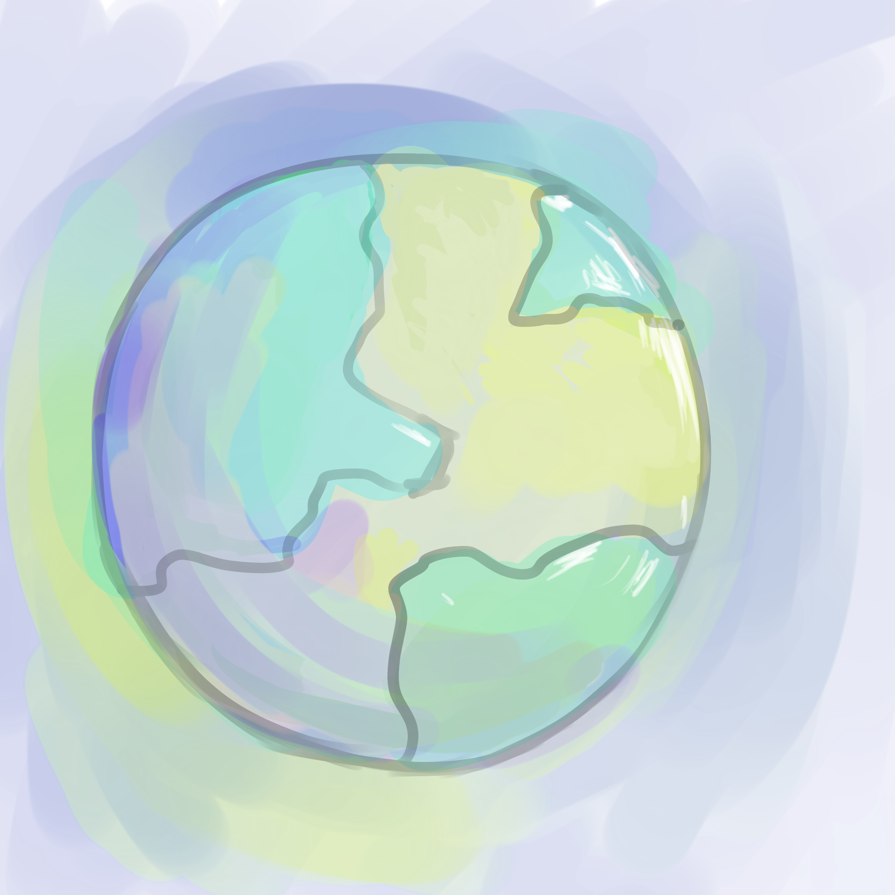

Welcome to Beatlejuice, a planet inhabited by Blobs, an amiable and harmless alien species.
Let's get you acquainted with them...

Please meet

- Asako:

- Amit:

- Catherine:

- And finally, Elsie:

Shown above is the game screen.
Each row contains several Blob Clusters. Scroll through them using the blue left/right arrow buttons:
The Blob Cluster on the first row is in need of your help. It is unhappy.
You can help increase its happiness by helping it form a Blob Supercluster,
by grouping it with similar Blob Clusters.
Each row contains several Blob Clusters. Scroll through them using the blue left/right arrow buttons:
The Blob Cluster on the first row is in need of your help. It is unhappy.
You can help increase its happiness by helping it form a Blob Supercluster,
by grouping it with similar Blob Clusters.
Blob clusters are similar if they have common creatures.
For instance, and 
are similar because they both have, ,
and
.
Ultimately, your goal is to reach the ‘Happiness’ score (1 in this case)
that is shown on the bottom right of the game screen.
For instance,
and
are similar because they both have
, ,
and
.Ultimately, your goal is to reach the ‘Happiness’ score (1 in this case)
that is shown on the bottom right of the game screen.
Please attempt to reach the 'Happiness' score now, by helping the Blob Cluster
in the first row form a Blob Supercluster, that is a grouping of Blob Clusters.
To help you identify suitable Blob clusters,
Blobs that are in your Blob Supercluster are highlighted in blue,
and Blobs that are in many elements of the Supercluster
are highlighted with a more saturated blue.
Blob Clusters will often already belong to a Supercluster.
The different Superclusters are labelled using coloured bars to the right of each element. For instance, the elements in row 2 and row 4 a friends because their bars have the same color. Blob Clusters that already belong to a Supercluster may be happy and disinclined to leave. Therefore, even if these Blob Clusters are similar to the Supercluster you are building, your happiness score may still decrease. A Blob Cluster's happiness is indicated by a happiness bar on its left, like so: .
A fully red bar indicates a very happy Blob Cluster.
.
A fully red bar indicates a very happy Blob Cluster.
Lookout for Clusters that have low happiness and are highly similar to your Supercluster as they have a good chance of improving your score.
Try to add elements with low happiness bars to reach the target score.
The different Superclusters are labelled using coloured bars to the right of each element. For instance, the elements in row 2 and row 4 a friends because their bars have the same color. Blob Clusters that already belong to a Supercluster may be happy and disinclined to leave. Therefore, even if these Blob Clusters are similar to the Supercluster you are building, your happiness score may still decrease. A Blob Cluster's happiness is indicated by a happiness bar on its left, like so:
.
A fully red bar indicates a very happy Blob Cluster.Lookout for Clusters that have low happiness and are highly similar to your Supercluster as they have a good chance of improving your score.
Try to add elements with low happiness bars to reach the target score.
You can reorder the Blob Clusters in each row so that they are sorted based on those that have been check-marked  .
This will help you identify the Blob Clusters that are most similar to those in your Supercluster.
Using this feature, try your hand at beating the target score once more!
.
This will help you identify the Blob Clusters that are most similar to those in your Supercluster.
Using this feature, try your hand at beating the target score once more!
.
This will help you identify the Blob Clusters that are most similar to those in your Supercluster.
Using this feature, try your hand at beating the target score once more!